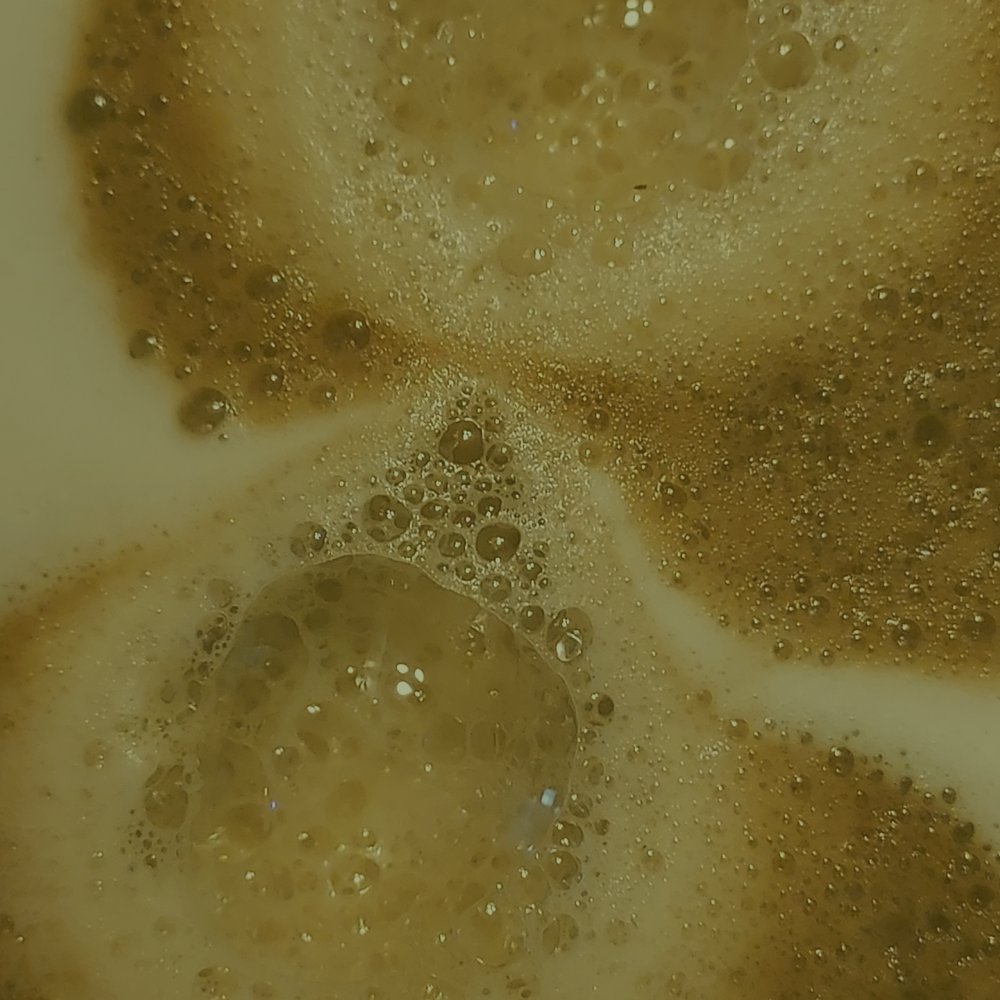

artCoffee Application
USER: Linoy Biton
CASE: artCoffee is an application that offers coffee delivery services that match the user's needs and the available coffee options nearby, taking the user's preferences into account too.
Click here to see how Linoy Biton, an entrepreneur, found her morning balance with her favorite coffee using the artCoffee app!